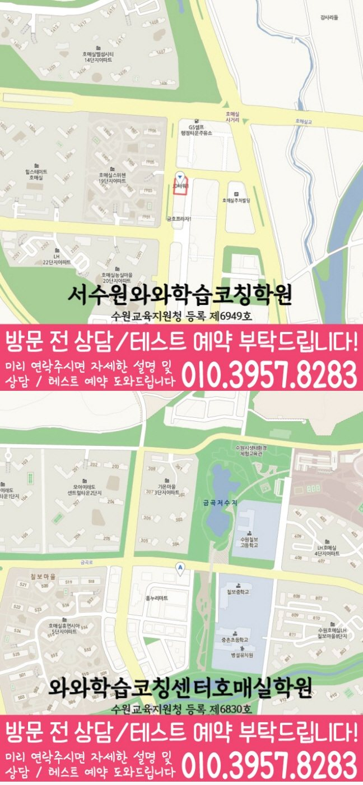

개념·유형·풀이의 연결은 어디에서 막히나
최근 시험지의 오답을 개념 누락·조건 해석·계산 실수·시간 부족으로 나누어 표시하세요.
- 맞힌 문제 중 근거가 불분명한 문항 분리
- 일주일 공부 시간과 실제 완료량 함께 준비
- 개념·유형·풀이의 연결의 첫 답안과 수정 답안 비교
MIDDLE SCHOOL MATH COACHING · 경기 수원시
호매실동 중등 수학학원 선택에 필요한 현재 진단, 교재와 시험 자료, 풀이 기록, 주간 복습과 상담 전 센터 확인 질문을 안내합니다.
호매실동 중등 수학 상담에서는 최근 시험지에서 개념·조건·계산 중 무엇이 흔들렸는지 나누어야 합니다. 진단 결과가 학교 일정과 주간 행동으로 이어지는지 살펴보세요.
SEARCH INTENT · MIDDLE MATH
최근 시험지의 오답을 개념 누락·조건 해석·계산 실수·시간 부족으로 나누어 표시하세요.
원자료에 기재된 중학교는 칠보중·상촌중입니다. 시험 범위의 단원마다 바로 풀 문제와 시간차를 두고 다시 풀 문제를 구분하세요.
첫 2주는 개념 설명, 식 세우기, 계산 검산 가운데 가장 약한 한 단계를 매일 짧게 확인하세요.
중등 수학 선택 기록: ‘관리합니다’라는 답보다 무엇을, 어떤 기록으로, 언제 다시 확인하는지 세부 기준을 요청하세요.


ANSWER-FIRST MIDDLE SCHOOL MATH GUIDE
정답을 가린 상태에서 학생이 다시 설명할 수 있는지 살펴보세요. 풀이 속도보다 문제 조건을 읽고 순서를 세우는 연습이 필요한 중학교 2학년 학생이라면 새 문제집보다 최근에 틀린 세 문항이 더 유용합니다. 정답을 가리고 문제 조건과 첫 식을 다시 설명하게 해 보세요. 확인 결과가 교재와 복습 간격에 반영되는지도 살펴보세요.
수학 문제를 마주하면 어디서부터 시작해야 할지 몰라 학습을 미루는 중학생과, 현재 실력을 정확히 파악하고 싶은 학부모가 많습니다. 호매실동 중등 수학학원은 학습분석을 바탕으로 개념 이해와 문제 해결 과정에서 막히는 지점을 확인하며 학습 흐름을 살펴봅니다. 와와학습코칭센터 호매실점은 학생의 현재 상태에 맞춰 필요한 학습 방향을 정리하고 수업과 코칭의 기준을 세웁니다.
학습분석을 통해 최근 학습 내용과 문제 풀이 상태를 살펴봅니다. 개념 이해, 계산 정확도, 문제 접근 방식 중 우선적으로 보완할 영역을 정리합니다.
틀린 문제를 바로 지적하기보다 오답 원인을 함께 나누어 봅니다. 계산 실수, 개념 혼동, 조건 누락처럼 원인을 구체화하면 다음 학습에서 무엇을 고쳐야 하는지 알기 쉬워집니다.
단순히 문제를 많이 풀기보다 개념이 비어 있는지, 계산 과정에서 실수가 반복되는지, 문제를 읽고 식으로 옮기는 과정이 어려운지 구분합니다. 수학에 대한 부담이 어디에서 시작됐는지 확인하는 것이 첫 단계입니다.
상담 전에는 학생이 혼자 남긴 흔적부터 살펴보는 편이 좋습니다. 정답만 다시 적으면 오답 원인이 남지 않습니다. 첫 식을 세운 이유, 중간 계산, 검산 결과를 짧게 남겨 다음 복습에서도 같은 기준을 사용하세요. 분량보다 완료 기준이 분명한지를 물어보는 것이 중요합니다.
필요한 개념을 다시 확인한 뒤 기본 유형부터 적용합니다. 풀이 방법을 외우는 데 그치지 않고 문제의 조건을 읽고 알맞은 개념을 선택하는 연습으로 연결합니다.
한 번의 점수보다 여러 날의 학습 흔적을 대조해 보세요. 확인된 센터 정보상 수학 수업 가능 중등 학년은 중1·중2·중3입니다. 현재 개설 시간과 학생의 학교 진도는 상담에서 다시 확인해야 합니다. 학생의 학교 자료가 바뀌면 계획도 함께 대조해야 합니다.
틀린 문제는 정답만 다시 쓰지 않고 오답 원인을 구분합니다. 학습 과정에서 확인된 어려움과 다음에 점검할 내용을 정리해 상담 시 현재 상태를 함께 확인할 수 있습니다.
가정 복습 시간을 정하기 전에 현재 자료부터 확인하세요. 학교 숙제와 누적 복습을 한날에 몰지 말고 개념 설명, 대표 유형, 재풀이를 서로 다른 날에 배치하세요. 완료 기준은 문제 수보다 혼자 설명할 수 있는지로 정하는 편이 좋습니다. 다음 상담에서는 변화보다 재현 가능한 과정을 확인하세요.
중등 수학은 이전 단원의 개념 누락이 다음 단원 학습에 영향을 줍니다. 호매실동 학생의 현재 풀이 과정을 바탕으로 필요한 내용을 정리하고, 무리한 선행보다 이해 가능한 학습 순서를 설정합니다.
정답을 맞혔는지만 확인하지 않고 어떤 개념을 사용했는지, 풀이 순서가 적절했는지 살펴봅니다. 학생이 자신의 풀이를 말로 설명하며 문제 해결 과정을 점검하도록 돕습니다.
학교 시험 전후의 답안을 비교하면 시작점이 더 분명해집니다. 고교 전환 준비는 어려운 문제를 미리 푸는 일이 아닙니다. 학교 시험이 끝난 뒤에도 대표 오답을 다시 풀고 풀이를 재현할 수 있는지를 확인하는 과정입니다. 학생이 혼자 재현한 결과까지 비교 기준에 포함하세요.
새 교재를 고르기보다 지금 막힌 과정을 먼저 설명해 보세요. 상담에서는 최근 시험지, 현재 교재, 학교 범위표, 학생이 직접 쓴 풀이를 함께 준비하세요. 첫 주에 바꿀 행동과 재확인 날짜가 답변에 포함되어야 합니다. 상담 뒤에는 학생과 보호자가 같은 기준을 공유해야 합니다.
먼저 최근 기록을 같은 기준으로 나누어 보세요. 센터 정보는 주소·등록 정보·가능 학년·학교 참고 자료처럼 확인 가능한 사실과 대조하세요. 개설 시간과 교습비는 최신 상담 자료로 다시 확인해야 합니다. 답변은 첫 주의 구체적인 행동으로 이어져야 합니다.
호매실동 중등 수학학원의 중학교 범위는 원자료상 칠보중·상촌중이며, 모두 실제 수업 가능 학교입니다. 중등 교과 단계 상담에서는 학생 학년을 학교명과 구분해 적고 회신받은 자리 상태는 빈칸에 분명하게 표시하세요.
중등 단계 기준으로 첫 상담 전에 재학 학교·학년·희망 과목을 구분해 준비하고 현재 학습 범위를 한 문장으로 덧붙이고 원자료 표기와 최신 안내가 일치하는지 대조해 보세요.
호매실동 중등 수학학원의 학교 정보와 학생 개인의 수업 조건을 섞지 말고 차례로 검토한 뒤, 마지막에는 문의하려는 과목을 정확히 구분하고 반 배정 상태는 담당자에게 직접 물어보세요.
LOCAL · MIDDLE GRADE · STUDENT
풀이 속도보다 문제 조건을 읽고 순서를 세우는 연습이 필요한 중학교 2학년 학생을 구체적인 상담 대상으로 삼았습니다. 학년과 현재 개설 시간은 확인된 정보와 실제 상담 내용을 함께 보세요.
QUESTIONS & ANSWERS
호매실동에서는 최근 시험지와 교재를 보고 계산 과정과 검산 습관에서 막힌 지점을 먼저 찾습니다. 중간 계산을 지우지 않고 실수 지점을 표시한 풀이를 바탕으로 첫 주의 복습 행동과 확인 날짜를 정해야 합니다.
호매실동에서 확인된 수학 수업 가능 중등 학년은 중1·중2·중3입니다. 학생 진도와 현재 개설 시간은 상담에서 다시 대조해야 합니다.
호매실동에서 확인된 중학교 정보는 칠보중·상촌중입니다. 최신 시험 범위표와 교재를 준비해 실제 반영 범위를 확인하세요.
호매실동에서는 최근 시험지, 현재 교재, 학교 범위표와 학생이 직접 남긴 풀이를 준비하세요. 정답보다 막힌 지점과 다시 확인할 날짜가 중요합니다.
호매실동 상담에서는 진단 결과가 교재 진도와 주간 복습 계획에 어떻게 반영되는지 물어보세요. 학생이 혼자 설명하고 다시 풀 수 있는 완료 기준도 확인해야 합니다.
PARENT VOICE GUIDE
정답률만 전달하지 않고 계산 과정과 검산 습관에서 놓친 기록을 구분했습니다. 각각의 복습 기준과 다음 확인 날짜를 물어보니 수업 계획을 구체적으로 비교할 수 있었습니다.
특정 학부모의 이용 경험이나 성적 사례가 아니라, 대표적인 상담 준비 상황을 재구성한 예시입니다.
상담 전 체크
개념·조건·계산 중 막힌 지점을 확인해야 첫 주의 학습 순서를 구체적으로 정할 수 있습니다.
같은 지역에서 함께 확인하기